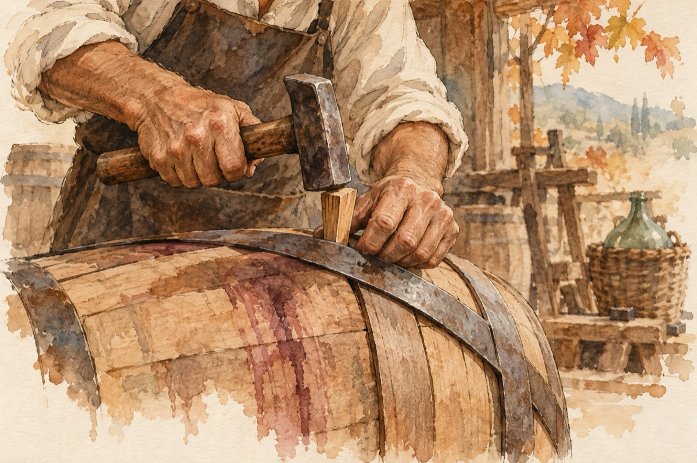

Dogarul
La Mysore - India.
Toamna e-a dogarului
Pune doage, bate cercuri
E vremea culesului
Timpul te cheamă-n întreceri!
Boc, boc, boc, o doagă veche
Cu o doagă nouă-o drege
La ciubăr face pereche
În vie când vor culege!
Pune doagă după doagă
Butoiul ca să îl dreagă
Căptușit cu papură
Vinul ca să nu se scurgă!
Butoiul, în cercuri pecetluit
Îl ține-ntr-un bocănit
Cu o până și-un ciocan
Așa făcând an de an!
Plin de griji și de nevoi
Când vinul fierbe-n butoi
Dogarul pune-o canea
Să-nceapă distracția.
Vasile Groza